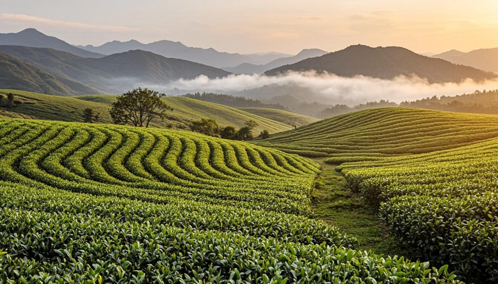

Über uns
Eine neue Generation für Tee begeistern
GoSipTea ist aus einem studentischen Projekt an der Hochschule Heilbronn entstanden. Unsere Vision ist es, Tee als Teil gemeinsamer Momente und eines modernen Lebensstils zu erleben.

Entstehung & Grundgedanke
Wie GoSipTea entstand
GoSipTea ist in einem studentischen Projekt entstanden. Ausgangspunkt war die Frage, wie Tee für eine neue Generation an Bedeutung gewinnen kann. Tee steht für Ruhe, Genuss und gemeinsame Momente, wird aber oft als klassisch und traditionell wahrgenommen. Genau hier setzen wir an und zeigen, wie lebendig Teekultur heute sein kann.
Uns geht es nicht nur um das Produkt, sondern um das, was entsteht, wenn Menschen gemeinsam Tee trinken. Gespräche, Begegnungen und echte gemeinsame Zeit stehen im Mittelpunkt. Unter dem Motto Sip & Talk wird Tee wieder zu dem, was er schon immer war. Ein Anlass, um miteinander ins Gespräch zu kommen.
Mehr über Sip & Talk erfahrenVision & Mission
Wohin wir wollen und wie wir dorthin kommen
Unsere Vision
Wir wollen eine neue Generation von Menschen für Tee begeistern, die ihn nicht nur als Getränk, sondern als Teil ihrer gemeinsamen Momente und ihres Lebensstils versteht. GoSipTea soll Menschen verbinden, Gespräche anstoßen und langfristig für eine Gemeinschaft stehen, die bewusst und fair handelt und das Miteinander in den Mittelpunkt stellt.
Unsere Mission
GoSipTea macht Tee zeitlos und bringt Menschen durch gemeinsamen Genuss und echte Gespräche zusammen. Dabei verbinden wir hochwertigen Tee mit Fairness, Transparenz und einem verantwortungsvollen Umgang mit Mensch und Umwelt.
Unser Versprechen
Wir zeigen, woher unsere Tees stammen, wie sie komponiert sind und was wir noch nicht belegen können. Diese Ehrlichkeit ist für uns der erste Schritt echter Verantwortung.
Unsere Werte
Vier Werte, die uns leiten
Nachhaltigkeit
Wir übernehmen Verantwortung für unsere Umwelt und gestalten unseren Tee so nachhaltig wie möglich. Dabei gehen wir Schritt für Schritt vor, ehrlich und messbar.
Verantwortung
Bio-Anbau, natürliche Zutaten und faire Bedingungen in der gesamten Wertschöpfungskette gehören für uns zu einem bewussten Umgang mit Mensch und Umwelt.
Transparenz
Wir zeigen offen, wo unser Tee angebaut wird, woher die Zutaten stammen und wie das Produkt hergestellt wird. Vertrauen entsteht durch Nachvollziehbarkeit.
Gemeinschaft
GoSipTea bringt Menschen durch gemeinsamen Teegenuss zusammen und schafft Raum für Gespräche, Austausch und gemeinsame Erlebnisse.

Nachhaltigkeit & Qualität
Guter Tee braucht gute Bedingungen
Woher kommt unser Tee, unter welchen Bedingungen wächst er und wie verpacken wir ihn? Wie wir Verantwortung in der Lieferkette leben, wo wir stehen und wo wir noch am Anfang stehen, zeigen wir dir transparent auf unserer Nachhaltigkeitsseite.
Nachhaltigkeit & Qualität entdecken
Gemeinschaft
Sip & Talk, Tee als Anlass für Gespräche
Tee soll nicht nur getrunken werden, sondern einen Moment schaffen, in dem Menschen miteinander ins Gespräch kommen, sich austauschen und gemeinsame Erlebnisse teilen. Auf Instagram zeigen wir gemeinsame Teemomente, Teewissen und Einblicke hinter die Tasse.